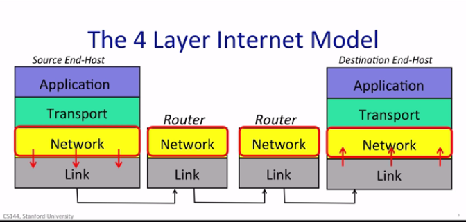
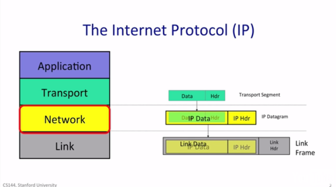
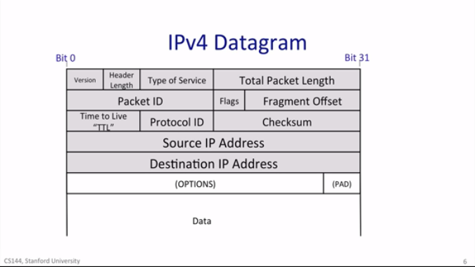
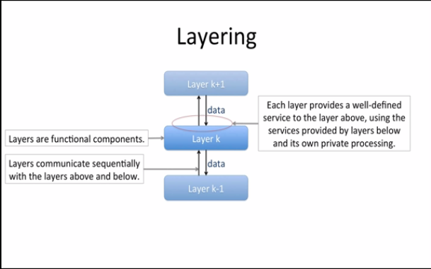
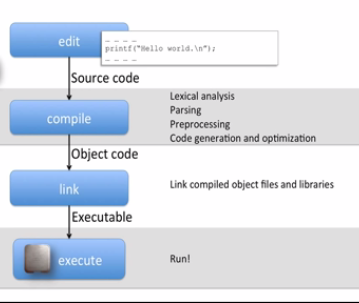
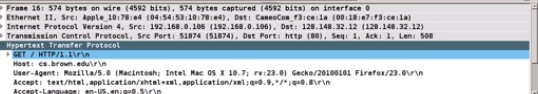

Networking Basics
Thanks to Stanford Online
Networks Layers (ISO-OSI)

Network Layer
Delivers packets to computers

Internet Protocol: characteristics
- IP is a datagram service. Datagrams are self-contained: data and header (destination address + source address). Datagrams are delivered hop-by-hop (node-to-node, router-to-router). Routers have forwarding tables for different IP addresses, they know only the next hop for the datagram in the packet.
- IP is unreliable. Packets may get lost or dropped, or simply delivered out of sequence compared with the sending sequence.
- IP guarantees the best effort: packets will be dropped only when necessary (recovery these errors is on Transport, or Link).
- IP is connectionless. It maintains no knowledge at all of the state or sent datagrams
Internet Protocol: model and features
- IP is a deliberately simple service, to work on different kinds of physical infrastructure
- IP tries to prevent pakets looping forever (usually due to updates in forwarding tables), using the hop-count field in the datagram (TTL field).
- IP limits packets size depending on the underlying Link (different networks have different max-size for packets, Network layers in routers fragments packets exceed max-size)
- IP uses checksums to check the header is not being corrupted and the destination is right
IPv4 Datagram

You can experience the different hops walked by a packed with the traceroute command ($> traceroute -w 1 www.google.com)
Transport Layer
delivers data to applications
TCP Byte Stream
Client and server establish a communication using the three-way-handshake (SYN > SYN/ACK > ACK):
- client sends a "synchronize" (SYN)
- server responds with a "synchronize/acknowledge" (SYN/ACK)
- client responds with an "acknowledge" (ACK)
Everybody can interact and learn about this behaviour with software like (Wireshark)[https://www.wireshark.org/]
Packets
Packet switching, Layering, Encapsulation
Packet Switching
Reminder: packets are self-contained, independent chunks of communication.
Flow: a collection of datagrams belonging to the same end-to-end communication (e.g. a TCP connection).
Packet switching principle in a common router: Independently, for each arriving packet, pick its outgoing link. If the link is free, send it. Else, hold the packet for later..
This principle has important consequences:
- simple packet forwarding: each router has its own forwarding table, that defines the next hop to the destination defined in the packet.
- efficient sharing of links (lines between hops): many different packets from different users/connections can share the same link.
- considering that data traffic is bursty. packet switching allows to use all available link capacity and to share link capacity. This is called statistical multiplexing.
Layering
Layering is a well-know structure for computer and network systems

Example of use layering outside networks:

Five main reason for Layering:
- Modularity: It breaks down the system into smaller, more manageable modules
- Well defined services: Each layer provides a well defined service to the layer above
- Reuse: A layer above can rely on all the hard work put in by others to implement the layers below
- Separation of concerns: Each layer can focus on its own job, without having to worry about how other layers do theirs
- Continous improvement (ex. cross-layer optimization)
- A 6th benefit is specific to layered communication systems, such as the Internet. That is peer to peer communications
Encapsulation
When you send a TCP segment, for example, it’s inside an IP packet, which is inside an Ethernet frame. Encapsulation is how this works. Encapsulation is the principle by which you organize information in packets so that you can maintain layers, yet let them share the contents of your packets.
The way this works is each protocol layer has some headers, followed by its payload.
Example: A HTTP GET request of a Wi-Fi Ethernet: The HTTP GET request is the payload of a TCP segment. The TCP segment, encapsulating the HTTP GET, is the payload of an IP packet. This IP packet, encapsulating the TCP segment and the HTTP GET, is the payload of a Wi-Fi frame.

Image: This is how WireShark represent the example above, each line represents the different layers' payloads (from bottom to top: the application layer with the HTTP request, the transport layer with the TCP segment, the IP layer with the datagram, and the Ethernet frame).
Example: VPN: HTTP inside TCP inside IP inside TLS inside TCP inside IP inside Ethernet. In VPN the initial payloads are encypted in TLS and sent to the VPN gateway, that can decrypt them and route the decypted payload inside the private network.